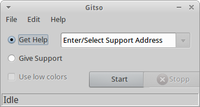

Gitso
Dieser Artikel wurde für die folgenden Ubuntu-Versionen getestet:
Ubuntu 14.04 Trusty Tahr
Zum Verständnis dieses Artikels sind folgende Seiten hilfreich:
Gitso  ist ein kleines grafisches Programm, das es ermöglicht, in zwei einfachen Schritten eine VNC-Verbindung zur Fernwartung zwischen zwei Computern herzustellen. Ein Helfer kann damit auf den Desktop eines Hilfesuchenden zugreifen und so direkt Hilfestellung geben. Das Besondere an Gitso ist, dass die VNC-Verbindung "rückwärts" aufgebaut wird (VNC reverse connection), der Hilfesuchende also die Verbindung zum Helfer aufbaut. Dadurch muss sich der Hilfesuchende nicht auch noch um Dinge wie die Portweiterleitung kümmern, das übernimmt der Helfer. Gitso ist für Linux, Mac OS und Windows verfügbar.
ist ein kleines grafisches Programm, das es ermöglicht, in zwei einfachen Schritten eine VNC-Verbindung zur Fernwartung zwischen zwei Computern herzustellen. Ein Helfer kann damit auf den Desktop eines Hilfesuchenden zugreifen und so direkt Hilfestellung geben. Das Besondere an Gitso ist, dass die VNC-Verbindung "rückwärts" aufgebaut wird (VNC reverse connection), der Hilfesuchende also die Verbindung zum Helfer aufbaut. Dadurch muss sich der Hilfesuchende nicht auch noch um Dinge wie die Portweiterleitung kümmern, das übernimmt der Helfer. Gitso ist für Linux, Mac OS und Windows verfügbar.
Installation¶
Gitso ist ab Ubuntu 14.04 in den offiziellen Paketquellen enthalten [1]:
gitso (universe)
 mit apturl
mit apturl
Paketliste zum Kopieren:
sudo apt-get install gitso
sudo aptitude install gitso
Anwendung¶
Anschließend ist die Anwendung bei Ubuntu-Varianten mit einem Anwendungsmenü unter "Netzwerk -> Gitso" zu finden.
Der Helfer¶
Nachdem Helfer und Hilfesuchender das Programm installiert haben, muss der Helfer, bevor er Gitso zum ersten Mal verwendet, zunächst den Port 5500 in der Firewall des Routers auf den Rechner, auf dem Gitso installiert ist, weiterleiten [3]. Anschließend startet der Helfer Gitso.
Der Helfer wählt "Give Support" aus und klickt anschließend auf die Schaltfläche "Start". Danach informiert sich der Helfer über die eigene IP-Adresse (bzw. ggf. die seines Routers), sofern ihm diese unbekannt ist. Die IP ist unter anderem im Web-Frontend des Routers, mit den Befehlen [4] (siehe auch wget und cURL):
wget -q -O - http://ipecho.net/plain ; echo
oder
curl "http://www.networksecuritytoolkit.org/nst/cgi-bin/ip.cgi"
oder auf Webseiten wie wieistmeineip.de  zu erfahren.
zu erfahren.
Der Hilfesuchende¶
 Anschließend startet die Person, die Hilfe benötigt, Gitso. Der Hilfesuchende wählt "Get Help" aus. Der Helfer teilt dem Hilfesuchenden seine eigene IP-Adresse mit, die der Hilfesuchende in dem dafür vorgesehenen Feld eingibt und anschließend auf die Schaltfläche "Start" klickt.
Beim Helfer sollte sich daraufhin nach kurzer Zeit ein Fenster öffnen, in dem der Desktop des Hilfesuchenden angezeigt wird. Seit Version 0.5 wird die VNC-Verbindung automatisch getrennt, sobald Gitso beendet wird.
 Übersichtsartikel
Übersichtsartikel- Erstellt mit Inyoka
-
 2004 – 2017 ubuntuusers.de • Einige Rechte vorbehalten
2004 – 2017 ubuntuusers.de • Einige Rechte vorbehalten
Lizenz • Kontakt • Datenschutz • Impressum • Serverstatus -
Serverhousing gespendet von